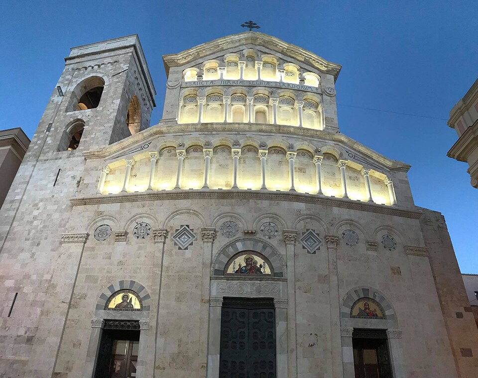

Il Duomo di Castello
La cattedrale della città alta: romanico pisano fuori, quiete e cripta sotto.
Controlla costo, prenotazione, apertura e accessibilità con il gestore. / Check price, booking, opening and accessibility with the operator.

La cattedrale della città alta: romanico pisano fuori, quiete e cripta sotto.
Controlla costo, prenotazione, apertura e accessibilità con il gestore. / Check price, booking, opening and accessibility with the operator.